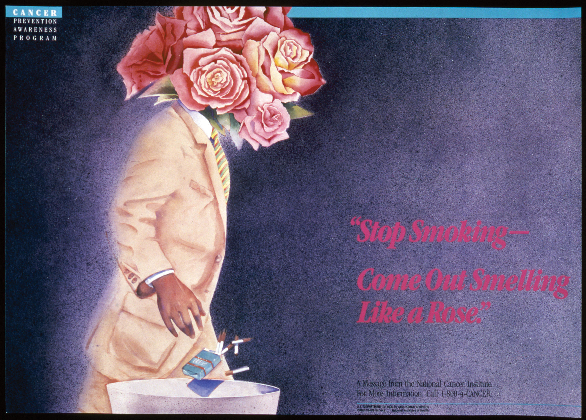

Early media studies focused on the use of mass media in propaganda and persuasion. However, journalists and researchers soon looked to behavioral sciences to help figure out the possible effect of mass media and communications on society. Scholars have developed many different approaches and theories to figure this out. Other scholars challenge whether research can ever untangle the relationship of media and effects. You can refer to these theories as you consider for yourself the media’s effect on individuals and culture.
In one of the earliest formulations of media effects, widespread fear that mass-media messages could outweigh other stabilizing cultural influences, such as family and community, led to what is known as the direct effects modelA theory that assumes audiences passively accept media messages and react predictably to those messages. of media studies. This model, prevalent in the 1920s and 1930s, assumed that audiences passively accepted media messages and would exhibit predictable reactions in response to those messages. For example, following the radio broadcast of War of the Worlds in 1938 (which was a fictional news report of an alien invasion), some people panicked and believed the story to be true.
The results of the People’s Choice Study challenged this model. Conducted in 1940, the study attempted to gauge the effects of political campaigns on voter choice. Researchers found that voters who consumed the most media had generally already decided for which candidate to vote, while undecided voters generally turned to family and community members to help them decide. The study thus discredited the direct effects model and influenced a host of other media theories.Ralph Hanson, Mass Communication: Living in a Media World (Washington, DC: CQ Press, 2009), 80–81. These theories do not necessarily give an all-encompassing picture of media effects but rather work to illuminate a particular aspect of media influence.
As noted in Chapter 1 "Media and Culture", during the early 1960s, English professor Marshall McLuhan wrote two books that had an enormous effect on the history of media studies. Published in 1962 and 1964, respectively, the Gutenberg Galaxy and Understanding Media both traced the history of media technology and illustrated the ways these innovations had changed both individual behavior and the wider culture. Understanding Media introduced the phrase that McLuhan has become known for: “The medium is the message.” This notion represented a novel take on attitudes toward media—that the media themselves are instrumental in shaping human and cultural experience.
His bold statements about media gained McLuhan a great deal of attention as both his supporters and critics responded to his utopian views about the ways media could transform 20th-century life. McLuhan spoke of a media-inspired “global village” at a time when Cold War paranoia was at its peak and the Vietnam War was a hotly debated subject. Although 1960s-era utopians received these statements positively, social realists found them cause for scorn. Despite—or perhaps because of—these controversies, McLuhan became a pop culture icon, mentioned frequently in the television sketch-comedy program Laugh-In and appearing as himself in Woody Allen’s film Annie Hall.
The Internet and its accompanying cultural revolution have made McLuhan’s bold utopian visions seem like prophecies. Indeed, his work has received a great deal of attention in recent years. Analysis of McLuhan’s work has, interestingly, not changed very much since his works were published. His supporters point to the hopes and achievements of digital technology and the utopian state that such innovations promise. The current critique of McLuhan, however, is a bit more revealing of the state of modern media studies. Media scholars are much more numerous now than they were during the 1960s, and many of these scholars criticize McLuhan’s lack of methodology and theoretical framework.
Despite his lack of scholarly diligence, McLuhan had a great deal of influence on media studies. Professors at Fordham University have formed an association of McLuhan-influenced scholars. McLuhan’s other great achievement is the popularization of the concept of media studies. His work, perhaps ironically, brought the idea of media effects into the public arena and created a new way for the public to consider the influence of media on culture.Alexander Stille, “Marshall McLuhan Is Back From the Dustbin of History; With the Internet, His Ideas Again Seem Ahead of Their Time,” New York Times, October 14, 2000, http://www.nytimes.com/2000/10/14/arts/marshall-mcluhan-back-dustbin-history-with-internet-his-ideas-again-seem-ahead.html.
In contrast to the extreme views of the direct effects model, the agenda-setting theoryA theory stating that the mass media determines the issues the public considers important. of media stated that mass media determine the issues that concern the public rather than the public’s views. Under this theory, the issues that receive the most attention from media become the issues that the public discusses, debates, and demands action on. This means that the media are determining what issues and stories the public thinks about. Therefore, when the media fail to address a particular issue, it becomes marginalized in the minds of the public.Ralph Hanson, Mass Communication: Living in a Media World (Washington, DC: CQ Press, 2009), 92.
When critics claim that a particular media outlet has an agenda, they are drawing on this theory. Agendas can range from a perceived liberal bias in the news media to the propagation of cutthroat capitalist ethics in films. For example, the agenda-setting theory explains such phenomena as the rise of public opinion against smoking. Before the mass media began taking an antismoking stance, smoking was considered a personal health issue. By promoting antismoking sentiments through advertisements, public relations campaigns, and a variety of media outlets, the mass media moved smoking into the public arena, making it a public health issue rather than a personal health issue.James Dearing and Everett Rogers, Agenda-Setting (Thousand Oaks, CA: Sage, 1996), 4. More recently, coverage of natural disasters has been prominent in the news. However, as news coverage wanes, so does the general public’s interest.
Figure 2.7
Through a variety of antismoking campaigns, the health risks of smoking became a public agenda.
Media scholars who specialize in agenda-setting research study the salience, or relative importance, of an issue and then attempt to understand what causes it to be important. The relative salience of an issue determines its place within the public agenda, which in turn influences public policy creation. Agenda-setting research traces public policy from its roots as an agenda through its promotion in the mass media and finally to its final form as a law or policy.James Dearing and Everett Rogers, Agenda-Setting (Thousand Oaks, CA: Sage, 1996), 8.
Practitioners of the uses and gratifications theoryA theory stating that individuals use media to satisfy specific needs or desires. study the ways the public consumes media. This theory states that consumers use the media to satisfy specific needs or desires. For example, you may enjoy watching a show like Dancing With the Stars while simultaneously tweeting about it on Twitter with your friends. Many people use the Internet to seek out entertainment, to find information, to communicate with like-minded individuals, or to pursue self-expression. Each of these uses gratifies a particular need, and the needs determine the way in which media are used. By examining factors of different groups’ media choices, researchers can determine the motivations behind media use.Zizi Papacharissi, “Uses and Gratifications,” in An Integrated Approach to Communication Theory and Research, ed. Don Stacks and Michael Salwen (New York: Routledge, 2009), 137.
A typical uses and gratifications study explores the motives for media consumption and the consequences associated with use of that media. By studying how and why people watch Dancing With the Stars while using Twitter, scholars suggest people are using the Internet as way to be entertained and to connect with friends. Researchers have identified a number of common motives for media consumption. These include relaxation, social interaction, entertainment, arousal, escape, and a host of interpersonal and social needs. By examining the motives behind the consumption of a particular form of media, researchers can better understand both the reasons for that medium’s popularity and the roles that the medium fills in society. A study of the motives behind a given user’s interaction with Facebook, for example, could explain the role Facebook takes in society and the reasons for its appeal.
Uses and gratifications theories of media are often applied to contemporary media issues. The analysis of the relationship between media and violence that you read about in preceding sections exemplifies this. Researchers employed the uses and gratifications theory in this case to reveal a nuanced set of circumstances surrounding violent media consumption, as individuals with aggressive tendencies were drawn to violent media.Zizi Papacharissi, “Uses and Gratifications,” in An Integrated Approach to Communication Theory and Research, ed. Don Stacks and Michael Salwen (New York: Routledge, 2009), 140–143.
Another commonly used media theory, symbolic interactionismA theory stating that the self is derived from and develops through human interaction., states that the self is derived from and develops through human interaction. This means the way you act toward someone or something is based on the meaning you have for a person or thing. To effectively communicate, people use symbols with shared cultural meanings. Symbols can be constructed from just about anything, including material goods, education, or even the way people talk. Consequentially, these symbols are instrumental in the development of the self.
This theory helps media researchers better understand the field because of the important role the media plays in creating and propagating shared symbols. Because of the media’s power, it can construct symbols on its own. By using symbolic interactionist theory, researchers can look at the ways media affects a society’s shared symbols and, in turn, the influence of those symbols on the individual.Cathrine Jansson-Boyd, Consumer Psychology (New York: McGraw-Hill, 2010), 59–62.
One of the ways the media creates and uses cultural symbols to affect an individual’s sense of self is advertising. Advertisers work to give certain products a shared cultural meaning to make them desirable. For example, when you see someone driving a BMW, what do you think about that person? You may assume the person is successful or powerful because of the car he or she is driving. Ownership of luxury automobiles signifies membership in a certain socioeconomic class. Equally, technology company Apple has used advertising and public relations to attempt to become a symbol of innovation and nonconformity. Use of an Apple product, therefore, may have a symbolic meaning and may send a particular message about the product’s owner.
Media also propagate other noncommercial symbols. National and state flags, religious images, and celebrities gain shared symbolic meanings through their representation in the media.
The spiral of silenceA theory stating that individuals who hold a minority opinion silence themselves to prevent social isolation. theory, which states that those who hold a minority opinion silence themselves to prevent social isolation, explains the role of mass media in the formation and maintenance of dominant opinions. As minority opinions are silenced, the illusion of consensus grows, and so does social pressure to adopt the dominant position. This creates a self-propagating loop in which minority voices are reduced to a minimum and perceived popular opinion sides wholly with the majority opinion. For example, prior to and during World War II, many Germans opposed Adolf Hitler and his policies; however, they kept their opposition silent out of fear of isolation and stigma.
Because the media is one of the most important gauges of public opinion, this theory is often used to explain the interaction between media and public opinion. According to the spiral of silence theory, if the media propagate a particular opinion, then that opinion will effectively silence opposing opinions through an illusion of consensus. This theory relates especially to public polling and its use in the media.Zizi Papacharissi, “Uses and Gratifications,” in An Integrated Approach to Communication Theory and Research, ed. Don Stacks and Michael Salwen (New York: Routledge, 2009), 153–154.
The media logicA theory stating that common media formats and styles serve as a way of perceiving the world. theory states that common media formats and styles serve as a means of perceiving the world. Today, the deep rooting of media in the cultural conciousness means that media consumers need engage for only a few moments with a particular television program to understand that it is a news show, a comedy, or a reality show. The pervasiveness of these formats means that our culture uses the style and content of these shows as ways to interpret reality. For example, think about a TV news program that frequently shows heated debates between opposing sides on public policy issues. This style of debate has become a template for handling disagreement to those who consistently watch this type of program.
Media logic affects institutions as well as individuals. The modern televangelist has evolved from the adoption of television-style promotion by religious figures, while the utilization of television in political campaigns has led candidates to consider their physical image as an important part of a campaign.David Altheide and Robert Snow, Media Worlds in the Postjournalism Era (New York: Walter de Gruyter, 1991), 9–11.
The cultivation analysisA theory stating that heavy exposure to media cultivates an illusory perception of reality. theory states that heavy exposure to media causes individuals to develop—or cultivate—an illusory perception of reality based on the most repetitive and consistent messages of a particular medium. This theory most commonly applies to analyses of television because of that medium’s uniquely pervasive nature. Under this theory, someone who watches a great deal of television may form a picture of reality that does not correspond to actual life. Televised violent acts, whether those reported on news programs or portrayed on television dramas, for example, greatly outnumber violent acts that most people encounter in their daily lives. Thus, an individual who watches a great deal of television may come to view the world as more violent and dangerous than it actually is.
Cultivation analysis projects involve a number of different areas for research, such as the differences in perception between heavy and light users of media. To apply this theory, the media content that an individual normally watches must be analyzed for various types of messages. Then, researchers must consider the given media consumer’s cultural background of individuals to correctly determine other factors that are involved in his or her perception of reality. For example, the socially stabilizing influences of family and peer groups influence children’s television viewing and the way they process media messages. If an individual’s family or social life plays a major part in her life, the social messages that she receives from these groups may compete with the messages she receives from television.
Media theories have a variety of uses and applications. Research one of the following topics and its effect on culture. Examine the topic using at least two of the approaches discussed in this section. Then, write a one-page essay about the topic you’ve selected.